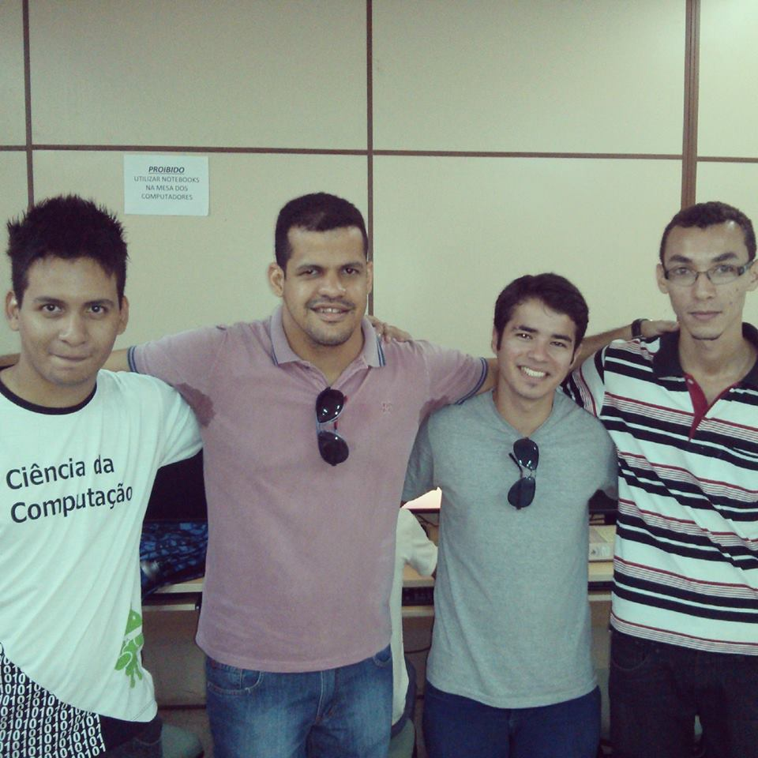
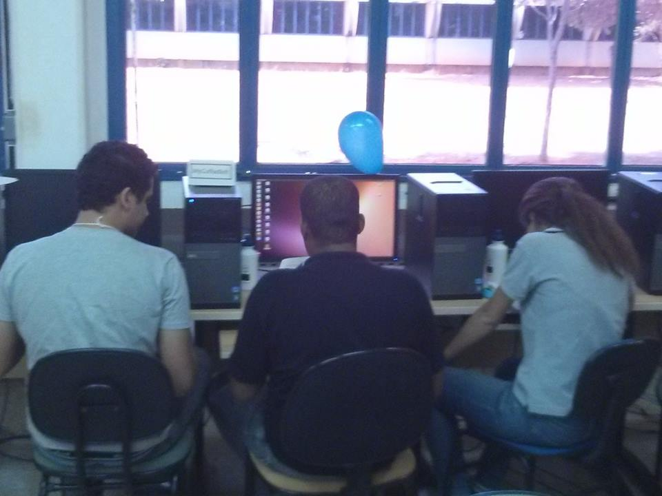

Problemas e Resultados da Primeira Fase 2013
Os problemas do warmup (Entradas e saídas ) tiveram os seguintes autores:- A - Morse - Misael Madrigal
- B - Beautiful Yekatarinburg - Pablo Ariel Heiber
- A - Attacking rooks - Pablo Ariel Heiber
- B - Blogger language - Pablo A. Heiber, Fidel Schaposnik e Rafael Garcia
- C - Counting Ones - Ray Williams Robinson Valiente
- D - Disjoint water supply - Jesus Alejandro Peña Mesias
- E - Eleven - Pablo Ariel Heiber
- F - Football - Leopoldo Taravilse
- G - Go up the Ultras - Guilherme Albuquerque Pinto
- H - Hide and seek - Pablo Ariel Heiber
- I - Inverting Huffman - Leopoldo Taravilse
- J - Join two kingdoms - Fidel Schaposnik
A UFT foi uma das sedes da fase regional de 2013 e ocorreu no campus de Palmas. A organização ficou por conta do prof. Dr. Warley Gramacho.
Os times que participaram da competição foram:
- chuck.roundHouseKick(): Sávio Dias, Marcos Raylan e Pedro Henrique
- Project*X: Valéria Martins, Thayllon Gomes e Vinícius Aires
- MyCoffeeSoft: Bryan Allan, Harlley Dias e Everton Júnior



